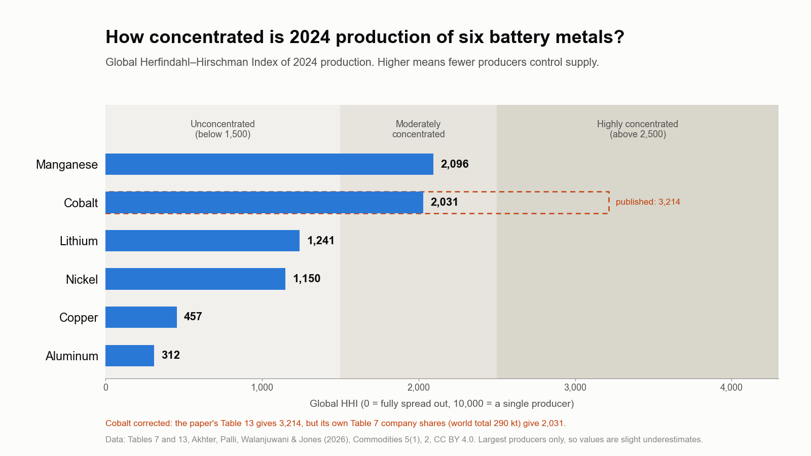

Critical Mineral Flows
How climate and trade policy shape battery-metal supply chains: who mines and processes the metals, and where they flow.
- Active
- 2024–present
- Critical minerals
- Supply chains
- Batteries
- Trade

In plain English
Governments now write climate goals and trade goals into the same policies: charges on the carbon in imports, subsidies for domestic clean-technology factories, and tariffs on batteries and solar panels. Dr. Jones's 2025 review in Current Sustainable/Renewable Energy Reports argued that the models energy planners rely on mostly leave this out, and called for tools that account for trade and geopolitics. That paper set the direction for this line of work.
The first step was a map. The lab's 2026 Commodities paper traced six lithium-ion battery metals (lithium, cobalt, nickel, manganese, copper and aluminum) from the mine to the first processing plant for 2024, by country and by company, and measured how concentrated each supply is. Current work follows the metals across borders, building a picture of U.S. imports and exports for each one and adding metals such as gallium, silicon and magnesium. A smaller strand looks at the carbon intensity of producing commodities such as cement and steel.
Main points
- Starts from a policy question: how climate and trade measures, taken together, shift the risks in clean-energy supply chains.
- Built a 2024 mine-to-processing map of six battery metals by country and corporation, reconciled with U.S. Geological Survey totals.
- Is extending that map to U.S. trade flows for each metal, using public import and export data.
- Includes a smaller, early-stage strand on the carbon intensity of cement, steel and manufacturing, drawn from published datasets.
- Supplies company market-share data to the lab's lithium supply-chain model, which tests trade-policy choices.
Interactive demoMineral supply chains →
Papers
Why energy models need to account for trade wars and geopolitics
Jones, E.C., Jr. (2025). Climate and trade policy for risk management: The need for geopolitical analytical frameworks for supply chain and energy system modeling. Current Sustainable/Renewable Energy Reports, 12, 9. https://doi.org/10.1007/s40518-025-00256-x
Climate and trade policy now go together; this review finds energy and supply-chain models have no framework to capture it and calls for one.
- China now produces about 29% of the world's manufacturing value added, nearly twice the US share (16%), after its output grew about 680% since 2000.
- China also makes more than 40% of the world's intermediate goods, so even products assembled at home depend on imports from geopolitical competitors.
- Since 2000, energy use and emissions per person and carbon intensity have fallen in every G7 country, while China's, India's and Indonesia's emissions have risen roughly fivefold since 1990.
- Each lever trades one risk for another: a carbon border charge can raise costs for limited global emissions benefit, and tariffs raise clean-technology prices and slow adoption.
![Diagram with three rows, one per policy lever. Carbon border adjustments aim to reduce climate risk from carbon leakage and concentration and geopolitical risk, but can raise costs, inflation and harm exporters' competitiveness. Subsidies for domestic production aim to reduce concentration, geopolitical, innovation and economic risk, but carry public cost and invite retaliation. Tariffs on energy technologies aim to reduce concentration and geopolitical risk, but can raise climate risk through slower adoption, and add costs, retaliation and innovation lag. A box below notes that energy and supply-chain models have no framework to capture these effects.](img/paper-climate-trade-policy-2025.png)
Who mines the battery metals, and where the ore goes
Akhter, R., Palli, S.R., Walanjuwani, M., & Jones, E.C., Jr. (2026). Mapping the supply chain of lithium-ion battery metals from mine to primary processing by country and corporation. Commodities, 5(1), 2. https://doi.org/10.3390/commodities5010002
Which countries and companies control six battery metals? Copper and aluminum are widely spread; cobalt and manganese are the most concentrated.
- Copper (HHI 457) and aluminum (HHI 312) production is spread across many companies, making them the least concentrated of the six metals.
- Cobalt and manganese are the most concentrated of the six, both in the moderate band once cobalt's index is corrected (see the note): one company, CMOC, produces about 39% of the world's cobalt, and the Democratic Republic of the Congo supplies 220 of 290 thousand tonnes, most of it shipped to China for refining.
- Manganese is moderately concentrated (HHI 2,096), with the French company Eramet alone producing about 31% of world output.
- Lithium (1,241) and nickel (1,150) score below the moderate threshold worldwide, yet Tsingshan alone produces about 30% of the world's nickel, and lithium ore from Australia and South America goes overwhelmingly to China for refining.
Correction note. The paper's Table 13 gives cobalt a global HHI of 3,214 (highly concentrated). Its own Table 7 company shares, on its stated world total of 290 kt, give 2,031 (moderately concentrated); the 3,214 comes from an older world total of about 230.5 kt. With the correction, no metal falls in the highly concentrated band; cobalt and manganese are the two most concentrated, both moderately.
![Stacked horizontal bar chart of the share of 2024 world production held by the largest companies for six battery metals. Cobalt: CMOC 39%, Zhejiang Huayou 16%, Glencore 13%, other listed companies bringing the total to 80%. Manganese: Eramet 31%, South32 21%, Assmang 17%, total 101%. Lithium: Sinomine 18%, Albemarle 16%, Pilbara Minerals 13%, total 100%. Nickel: Tsingshan 30%, Zhejiang Huayou 10%, Nornickel 6%, total 76%. Copper: Volcan 11%, Freeport-McMoRan 10%, BHP 10%, total 56%. Aluminum: Chalco 10%, China Hongqiao 8%, SPIC 6%, total 53%.](img/paper-battery-metals-supply-chain-2026.png)
Code and materials
People
- Erick C. Jones Jr., PhD, PEPrincipal Investigator · SEAR Lab directorin
- Ramsha AkhterPaper author (2026)
- Sisira PalliPaper author (2026)
- Mithilesh WalanjuwaniPaper author (2026)
- Sisira Reddy PalliAuthor, Commodities 2026
Fall 2026 team: names to be added from the lab personnel sheet. Profiles marked in link to LinkedIn. More past and present lab members are on the SEAR Lab team page.